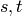
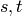
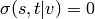
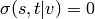
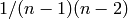

networkx.algorithms.centrality.betweenness_centrality¶
- networkx.algorithms.centrality.betweenness_centrality(G, normalized=True, weighted_edges=False, endpoints=False)¶
Compute the shortest-path betweenness centrality for nodes.
Betweenness centrality of a node
 is the sum of the
fraction of all-pairs shortest paths that pass through :
is the sum of the
fraction of all-pairs shortest paths that pass through :
where is the set of nodes,
 is the number of shortest
is the number of shortest  -paths,
and
-paths,
and  is the number of those paths
passing through some node other than .
If ,
is the number of those paths
passing through some node other than .
If ,  ,
and if
,
and if  ,  [R53].
,  [R53].Parameters : G : graph
A NetworkX graph
normalized : bool, optional
If True the betweenness values are normalized by  where
 is the number of nodes in G.
is the number of nodes in G.weighted_edges : bool, optional
Consider the edge weights in determining the shortest paths. The edge weights must be greater than zero. If False, all edge weights are considered equal.
endpoints : bool, optional
If True include the endpoints in the shortest path counts.
Returns : nodes : dictionary
Dictionary of nodes with betweenness centrality as the value.
See also
Notes
The algorithm is from Ulrik Brandes [R52]. See [R53] for details on algorithms for variations and related metrics.
For weighted graphs the edge weights must be greater than zero. Zero edge weights can produce an infinite number of equal length paths between pairs of nodes.
References
[R52] (1, 2) A Faster Algorithm for Betweenness Centrality. Ulrik Brandes, Journal of Mathematical Sociology 25(2):163-177, 2001. http://www.inf.uni-konstanz.de/algo/publications/b-fabc-01.pdf [R53] (1, 2, 3) Ulrik Brandes: On Variants of Shortest-Path Betweenness Centrality and their Generic Computation. Social Networks 30(2):136-145, 2008. http://www.inf.uni-konstanz.de/algo/publications/b-vspbc-08.pdf